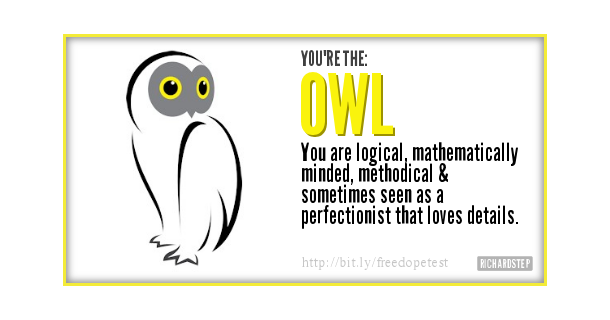

Identity, Values, and Strengths
Values and identity
Values and identity are a core part of our personal and professional lives. They shape our beliefs, decisions, and actions. It's time for me to reflect on my identity, values, strenghts, and limitations.
Sometimes we have to make tough decisions - where we need to examine if the positives outweight the benefits. I decided to learn te reo Māori at Te Wānanga o Aotearoa. This was an opportunity I was incredibly excited about, but there were factors that I needed to consider. I weighed the values of cultural appreciation, inclusivity, and education against potential cultural appropriation, disrespect, and occupying space that a Māori person could have occupied. I spoke with Māori friends and colleagues, who welcomed my decision and encouraged me to learn the language. It was important to me that if I was going to step into te ao Māori, I wasn't doing so temporarily. I didn't want to feel like I was trying out someone's culture to feel for a while - but rather that I was actively experiencing te ao Māori. I wanted to learn the language to be able to better understand Māori decision making, and better support endeavours by Māori for Māori. I feel proud of my decision - in learning reo Māori, I learned that learning a language opens up new world views and perspectives. It forces you to consider what you believe you know about your place in the world, and it forces you to consider your values.
As a queer person, I really related to the experiences of my Māori teachers and fellow students. I really understood the experience of being a second-class citizen in your own country, and feeling weighed down by a system designed by people who aren't your people. It made me value the power of advocacy and equity, and strenghed my resove to fight for my rights and the rights of others. I also really got to examine what culture is - and to come to appreciate the uniqueness and value of queer culture. As queer people we have our own references, our own spaces, our own language. In embracing the things that make up queer culture, I feel more belonging and community than I've ever felt in my life.
Strengths
I'd never really considered trying to identify my own strengths - nor how I could leverage them to achieve my own goals.Trying to do so felt like a pretty unmanagable task, and honestly one that I didn't really want to undertake. I ended up settling on the DOPE Bird Personality Test and According to the DOPE bird personality test the VIA Institute on Character Strengths Test.
DOPE Bird Personality Test
DOPE stands for Dove, Owl, Peacock, and Engle. The personality test gives everyone a result in one of four categories based on their answers to a multichoice quiz.

Owl
As you can, my result was Owl. Owls can be analytical, methodical, and organised. They have great attention to detail and love structure. Owls tend to be extremely logical - and while this can definitely be a beneficial trait, it almost means that Owl type personalities can take a while to decide as they want all the information possible. Owls are often good with numbers and thrive in data-driven careers like engineering, financial services, digital analytics, or science.
I can definitely see myself reflected in these results. I do love to have all the information - sometimes to a fault. Often, I can obssess over details to the point that I stop seeing the big picture. I can also relate to the types of careers they talk about - some of my most enjoyable work experiences have been working with data, particularly in the financial services sector.
VIA Institue on Charcter Strengths Test
The Chracter Strengths Test was able to give me some insight into some the character assets that I have that I can work with if I need to. I'll go over my top five strengths and then give some thoughts on them.
Love
Love means to value close relationships with others, in particular those in which sharing and caring are reciprocated. Love means to feel and be close to others.
Bravery
Bravery means to face adversity, difficulty, or pain and not shrink when challenges arise. It involves acting on convictions, even if unpopular, and speaking up for what's right even when there's opposition.
Humour
Humour means to recognize what is amusing in situations by pointing out what is funny or inconsistent. It involves lifting the moods of others with jokes, stories, or funny observations.
Love of learning
Love of learning involves mastering new skills, topics, and bodies of knowledge, whether on one's own in "the school of life" or more formally in institutions or training programs.
Curiosity
Curiosity means to be interested in learning, exploring, and experiencing new things with an openness to novelty and difference.
It's pretty hard to draw serious conclusions from online tests - but generally, I think I see a bit of a pattern relating to my own sense of identity (particularly as a queer person), and also the ways I learn and absorb information.
I can see that diving into new information and loving it is an asset for me - it's a sense of curiosity I've always had, and that I know others don't have. When I'm struck by curiosity, it can take me far on a learning journey - if I let it.
Limitations
It's important to acknowledge our limitations and how they can affect our learning and career development. For instance, I struggle with time management and procrastination, which can delay my progress and negatively impact my productivity. I also really struggle with being too challenged by things - as someone who often hasn't had to work hard to learn, when I need to put in the hard work it can be difficult for me to knuckle down and achieve what I know I'm capable of achieving. These can be some pretty big barriers to my learning journey, and if I don't keep them in check, they could derail this journey for me. I need to work really hard to talk to the Facilitation Team about where my head's at. When I'm feeling challenged and under pressure, I need to assure myself that I can achieve things - not immediately catastrophize.
Working with others
Working productively with others can sometimes be challenging. I think most people can probably identify times that they haven't been on the same page as someone else. I recall a time when I was collaborating with a colleague on some work, and we disagreed on the approach to be taken - this spilled over into my colleague asking another person (who was an internal client of ours) their opinion - which I felt made us look disconnected to the people we were working for. To resolve the tension, I tried to listen actively to their perspective and find common ground. While it helped alleviate some tension, we still struggled to agree on the project's direction. Looking back, I could have suggested involving a third party like our Manager to help us reach a compromise before things blew up. Both of us left the situation feeling unheard and frustrated.